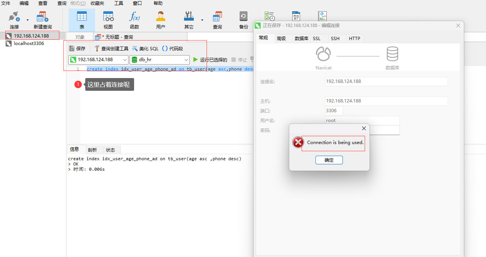

卸载MySQL
停止MySQL服务
systemctl stop mysqld
查询MySQL的安装文件
[root@centos01 ~]# rpm -qa | grep -i mysql
mysql-community-client-5.7.28-1.el7.x86_64
mysql-community-server-5.7.28-1.el7.x86_64
mysql-community-common-5.7.28-1.el7.x86_64
mysql-community-libs-5.7.28-1.el7.x86_64
卸载上述查询出来的所有的MySQL安装包
[root@centos01 ~]# rpm -e mysql-community-client-5.7.28-1.el7.x86_64 --nodeps
[root@centos01 ~]# rpm -e mysql-community-server-5.7.28-1.el7.x86_64 --nodeps
警告：/etc/my.cnf 已另存为 /etc/my.cnf.rpmsave
[root@centos01 ~]# rpm -e mysql-community-common-5.7.28-1.el7.x86_64 --nodeps
[root@centos01 ~]# rpm -e mysql-community-libs-5.7.28-1.el7.x86_64 --nodeps
删除MySQL的数据存放目录
rm -rf /var/lib/mysql/
删除MySQL的配置文件备份
rm -rf /etc/my.cnf.rpmsave
安装MySQL
下载Linux版MySQL安装包：https://downloads.mysql.com/archives/community/
通过finalshell上传安装包，放在/usr/local下
创建mysql目录，并解压
mkdir mysql
tar -xvf mysql-8.0.26-1.el7.x86_64.rpm-bundle.tar -C mysql
[root@centos01 local]# cd mysql
[root@centos01 mysql]# ll
总用量 789340
-rw-r--r-- 1 7155 31415 47836256 7月 2 2021 mysql-community-client-8.0.26-1.el7.x86_64.rpm
-rw-r--r-- 1 7155 31415 4694644 7月 2 2021 mysql-community-client-plugins-8.0.26-1.el7.x86_64.rpm
-rw-r--r-- 1 7155 31415 634632 7月 2 2021 mysql-community-common-8.0.26-1.el7.x86_64.rpm
-rw-r--r-- 1 7155 31415 6806272 7月 2 2021 mysql-community-devel-8.0.26-1.el7.x86_64.rpm
-rw-r--r-- 1 7155 31415 23638156 7月 2 2021 mysql-community-embedded-compat-8.0.26-1.el7.x86_64.rpm
-rw-r--r-- 1 7155 31415 4243808 7月 2 2021 mysql-community-libs-8.0.26-1.el7.x86_64.rpm
-rw-r--r-- 1 7155 31415 1264168 7月 2 2021 mysql-community-libs-compat-8.0.26-1.el7.x86_64.rpm
-rw-r--r-- 1 7155 31415 454689776 7月 2 2021 mysql-community-server-8.0.26-1.el7.x86_64.rpm
-rw-r--r-- 1 7155 31415 264457624 7月 2 2021 mysql-community-test-8.0.26-1.el7.x86_64.rpm
[root@centos01 mysql]# pwd
/usr/local/mysql
安装mysql的安装包
rpm -ivh mysql-community-common-8.0.26-1.el7.x86_64.rpm
rpm -ivh mysql-community-client-plugins-8.0.26-1.el7.x86_64.rpm
rpm -ivh mysql-community-libs-8.0.26-1.el7.x86_64.rpm
rpm -ivh mysql-community-libs-compat-8.0.26-1.el7.x86_64.rpm
yum install openssl-devel
rpm -ivh mysql-community-devel-8.0.26-1.el7.x86_64.rpm
rpm -ivh mysql-community-client-8.0.26-1.el7.x86_64.rpm
rpm -ivh mysql-community-server-8.0.26-1.el7.x86_64.rpm
以下是日志文件：
[root@centos01 mysql]# rpm -ivh mysql-community-common-8.0.26-1.el7.x86_64.rpm
警告：mysql-community-common-8.0.26-1.el7.x86_64.rpm: 头V3 DSA/SHA256 Signature, 密钥 ID 5072e1f5: NOKEY
准备中... ################################# [100%]
正在升级/安装...
1:mysql-community-common-8.0.26-1.e################################# [100%]
[root@centos01 mysql]# rpm -ivh mysql-community-client-plugins-8.0.26-1.el7.x86_64.rpm
警告：mysql-community-client-plugins-8.0.26-1.el7.x86_64.rpm: 头V3 DSA/SHA256 Signature, 密钥 ID 5072e1f5: NOKEY
准备中... ################################# [100%]
正在升级/安装...
1:mysql-community-client-plugins-8.################################# [100%]
[root@centos01 mysql]# rpm -ivh mysql-community-libs-8.0.26-1.el7.x86_64.rpm
警告：mysql-community-libs-8.0.26-1.el7.x86_64.rpm: 头V3 DSA/SHA256 Signature, 密钥 ID 5072e1f5: NOKEY
准备中... ################################# [100%]
正在升级/安装...
1:mysql-community-libs-8.0.26-1.el7################################# [100%]
[root@centos01 mysql]# rpm -ivh mysql-community-libs-compat-8.0.26-1.el7.x86_64.rpm
警告：mysql-community-libs-compat-8.0.26-1.el7.x86_64.rpm: 头V3 DSA/SHA256 Signature, 密钥 ID 5072e1f5: NOKEY
准备中... ################################# [100%]
正在升级/安装...
1:mysql-community-libs-compat-8.0.2################################# [100%]
[root@centos01 mysql]# yum install openssl-devel
已加载插件：fastestmirror
Could not retrieve mirrorlist http://mirrorlist.centos.org/?release=7&arch=x86_64&repo=os&infra=stock error was
14: curl#6 - "Could not resolve host: mirrorlist.centos.org; 未知的错误"
http://mirrors.ustc.edu.cn/centos/7.9.2009/os/x86_64/repodata/repomd.xml: [Errno 14] HTTP Error 404 - Not Found
正在尝试其它镜像。
To address this issue please refer to the below knowledge base article
https://access.redhat.com/articles/1320623
If above article doesn't help to resolve this issue please create a bug on https://bugs.centos.org/
http://mirrors.njupt.edu.cn/centos/7.9.2009/os/x86_64/repodata/repomd.xml: [Errno 14] HTTP Error 502 - Bad Gateway
......
docker-ce-stable | 3.5 kB 00:00:00
Could not retrieve mirrorlist http://mirrorlist.centos.org/?release=7&arch=x86_64&repo=extras&infra=stock error was
14: curl#6 - "Could not resolve host: mirrorlist.centos.org; 未知的错误"
extras
......
更新完毕:
openssl-devel.x86_64 1:1.0.2k-26.el7_9
作为依赖被升级:
openssl.x86_64 1:1.0.2k-26.el7_9 openssl-libs.x86_64 1:1.0.2k-26.el7_9
完毕！
[root@centos01 mysql]# rpm -ivh mysql-community-devel-8.0.26-1.el7.x86_64.rpm
警告：mysql-community-devel-8.0.26-1.el7.x86_64.rpm: 头V3 DSA/SHA256 Signature, 密钥 ID 5072e1f5: NOKEY
准备中... ################################# [100%]
正在升级/安装...
1:mysql-community-devel-8.0.26-1.el################################# [100%]
[root@centos01 mysql]# rpm -ivh mysql-community-client-8.0.26-1.el7.x86_64.rpm
警告：mysql-community-client-8.0.26-1.el7.x86_64.rpm: 头V3 DSA/SHA256 Signature, 密钥 ID 5072e1f5: NOKEY
准备中... ################################# [100%]
正在升级/安装...
1:mysql-community-client-8.0.26-1.e################################# [100%]
[root@centos01 mysql]# rpm -ivh mysql-community-server-8.0.26-1.el7.x86_64.rpm
警告：mysql-community-server-8.0.26-1.el7.x86_64.rpm: 头V3 DSA/SHA256 Signature, 密钥 ID 5072e1f5: NOKEY
准备中... ################################# [100%]
正在升级/安装...
1:mysql-community-server-8.0.26-1.e################################# [100%]
启动MySQL并且修改root密码
启动MySQL服务
systemctl start mysqld
systemctl restart mysqld
systemctl stop mysqld
查询自动生成的root用户密码：我们使用的是rpm的方式安装MySQL，在安装的时候是没有设置root用户的密码的，所以MySQL会生成一个临时的密码放在/var/log/mysqld.log文件里面。可以执行grep 'temporary password' /var/log/mysqld.log命令查看相关密码
[root@centos01 mysql]# grep 'temporary password' /var/log/mysqld.log
2021-11-28T09:51:54.819762Z 1 [Note] A temporary password is generated for root@localhost: tr0vflO=?LX7
2021-11-28T09:53:31.291222Z 1 [Note] A temporary password is generated for root@localhost: tRWpeIha!3wW
2024-09-23T12:58:15.802434Z 6 [Note] [MY-010454] [Server] A temporary password is generated for root@localhost: f7v<c,WXEucp
使用密码f7v<c,WXEucp登录MySQL（mysql -u root -p）
[root@centos01 mysql]# mysql -u root -p
Enter password:
Welcome to the MySQL monitor. Commands end with ; or \g.
Your MySQL connection id is 8
Server version: 8.0.26
Copyright (c) 2000, 2021, Oracle and/or its affiliates.
Oracle is a registered trademark of Oracle Corporation and/or its
affiliates. Other names may be trademarks of their respective
owners.
Type 'help;' or '\h' for help. Type '\c' to clear the current input statement.
使用ALTER USER 'root'@'localhost' IDENTIFIED BY 'root';修改root密码，但是会报错
mysql> ALTER USER 'root'@'localhost' IDENTIFIED BY '1234';
ERROR 1819 (HY000): Your password does not satisfy the current policy requirements
是因为设置的密码太简单，密码复杂度不够。我们可以设置密码的复杂度为简单类型，密码长度为4。
mysql> set global validate_password.policy = 0;
Query OK, 0 rows affected (0.00 sec)
mysql> set global validate_password.length = 4;
Query OK, 0 rows affected (0.00 sec)
降低密码的校验规则之后，再次执行上述修改密码的指令
mysql> ALTER USER 'root'@'localhost' IDENTIFIED BY '1234';
Query OK, 0 rows affected (0.01 sec)
退出，在根据设置的密码登录
mysql> exit
Bye
[root@centos01 mysql]# mysql -u root -p
Enter password:
Welcome to the MySQL monitor. Commands end with ; or \g.
Your MySQL connection id is 9
Server version: 8.0.26 MySQL Community Server - GPL
Copyright (c) 2000, 2021, Oracle and/or its affiliates.
Oracle is a registered trademark of Oracle Corporation and/or its
affiliates. Other names may be trademarks of their respective
owners.
Type 'help;' or '\h' for help. Type '\c' to clear the current input statement.
创建一个可以远程访问的用户
上面那个root用户只可以在本地访问（root'@'localhost），无法通过远程访问。比如不能用idea访问MySQL，也不能用navicate访问
所以，我们还需要创建一个root账户，用户远程访问
mysql> create user 'root'@'%' IDENTIFIED WITH mysql_native_password BY '1234';
Query OK, 0 rows affected (0.01 sec)
并给root用户分配权限
mysql> grant all on *.* to 'root'@'%';
Query OK, 0 rows affected (0.00 sec)
这样再次登录就可以了
connection is being used
我想用navicate链接数据库， 但是出现下面的报错：
因为该数据库使用旧的连接信息打开着查询窗口会话，一直占用着connection。
所以将窗口关闭掉，重新编辑连接，并点击确定，连接成功
转载请注明来源，欢迎对文章中的引用来源进行考证，欢迎指出任何有错误或不够清晰的表达。可以在下面评论区评论，也可以邮件至 1909773034@qq.com